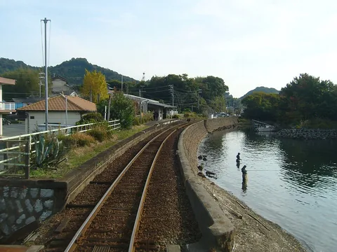

独自露营的时光，与和朋友共享的餐点。《摇曳露营△》悠然描绘旅途的种种乐趣。在滨名湖一带，也有能让人想起凛等人旅程的地点。
01
凛的滨名湖之旅
改编自Afro漫画的 摇曳露营△ ，描写喜欢独自露营的志摩凛，以及逐渐发现露营乐趣的各务原抚子。她们的日常，与日本山梨、静冈两县的风景交织。
第二季中，凛来到滨名湖。弁天岛的夕景、佐久米的碰面，以及舘山寺的购物，串起了环湖旅程。这里介绍的就是这三个地点。

02
一座湖，三个地点
新干线穿越滨名湖南侧，凛与抚子碰面的佐久米在北岸，舘山寺则位於东岸。把三个地点标在地图上，差别便很清楚：每一处都有不同的湖景，也需要不同的交通安排。
地图：© OpenStreetMap contributors。另加地点及标签。
03
在弁天岛待到傍晚
弁天岛海滨公园，就是凛在红色鸟居造型地标塔旁看夕阳的地方。把新干线上一瞥而过的湖，换成步行的速度，再亲近一次。
从滨松站搭JR东海道本线到弁天岛站。沿湖岸走走，留些时间等天空与水面变换颜色。想感受动画里的气氛，不妨让行程保留一段单纯待在这里的空白。
夕阳相对於鸟居落下的位置，会随季节改变。无论想寻找和凛相似的景色，还是只想在湖边度过傍晚，都记得留足日落前抵达的时间。
04
在佐久米，走近水边的车站

第二季第3集，凛与抚子在滨名湖佐久米站碰面。站前的Unagi Sakume餐厅，连结到两人品尝 鳗重的场景，也就是用漆盒盛装米饭与烤鳗鱼。一段景色、一顿饭，角色的旅程在这里很自然地成为实际的小旅行。
从新干线转乘时，可由丰桥或滨松搭JR东海道本线到新所原，再转乘天龙滨名湖铁道（天滨线）前往湖北侧。从弁天岛出发也需要先搭JR到新所原转车，并不是沿着湖岸就能直接从一个动画地点抵达下一个。
到了佐久米，看看湖水贴近铁轨的景色。照片拍於2006年，目前设备与营业安排请以铁道及餐厅自己的资讯为准。坐下来悠闲停留前，也先确认回程时刻。
05
在舘山寺买一份和菓子
位在湖东岸的舘山寺温泉，出现了凛散步、购买和菓子的场景。JR东海指南指出，真实的和菓子处Shizuka对应动画中的店家。故事稍微改了店名的日文写法，却保留了旅途中的气氛。
动画里的同款点心不一定随时有售。若购物是造访目的，出发前请确认店家的营业日及当期贩售品项。
从滨松站可搭路线巴士前往舘山寺。它与佐久米隔湖相望，是另一个目的地。以铁道为主的一天可安排佐久米；从滨松出发泡温泉的一天，则以舘山寺为主。分开规划，交通会更容易安排。
06
今天，想怎麽玩？
资料来源与照片出处
2026年11月3日确认。本文为非官方旅行文章，未转载作品图片、角色或纪念标志。